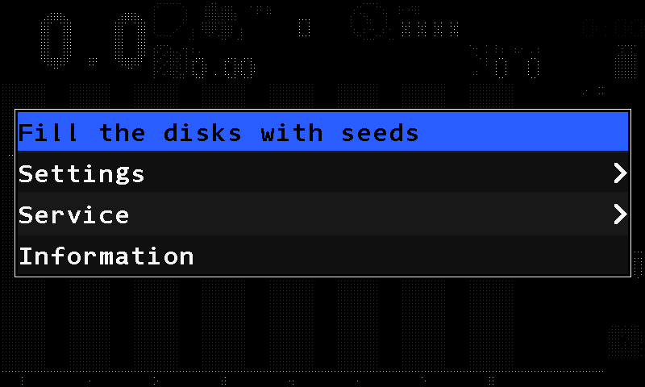
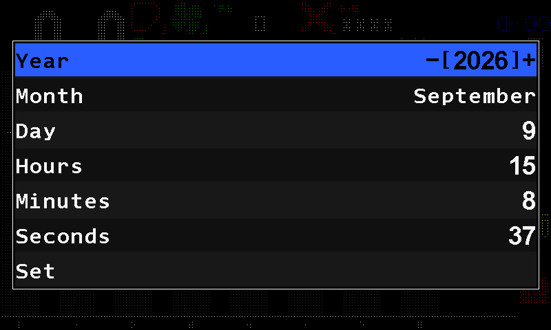

Menus, menus contextuels, pavé numérique et fenêtres
Les cinq éléments par lesquels tout se fait sur le panneau — écrans de travail, menu principal, menu contextuel d'un appareil, pavé numérique, et fenêtres qui interrogent ou informent.
Tout se passe sur le panneau par cinq éléments : les écrans de travail, le menu principal, le menu contextuel d'un appareil, le pavé numérique et les fenêtres qui vous posent une question ou vous informent. Les écrans de travail ont leur propre rubrique : Écrans de travail.
Le menu principal
Appuyez sur « MENU » sur l'écran d'accueil, ou touchez l'écran avec deux doigts. Le menu principal s'ouvre par-dessus l'écran d'accueil.

- Élément sélectionné. Texte noir sur une bande bleu clair. « UP » et « DOWN » déplacent la bande ; « MENU » entre dans l'élément. Ici « Fill the disks with seeds » (remplir les disques de semences) — voir Remplir les disques.
- « Settings » (réglages). Les réglages du système et de la machine. Voir Le menu Settings.
- Pointe de flèche. L'élément ouvre un autre menu.
- « Service » (maintenance). Éléments de mise en service et de maintenance. Voir Menu Service.
- « Information » (informations). Ouvre l'écran d'informations sur le système.
Dans tous les menus, un élément se lit d'après ce qui figure à sa droite :
| Ce que vous voyez à droite | Ce que cela signifie |
|---|---|
| Une pointe de flèche | L'élément ouvre un autre menu. Appuyez sur « MENU ». |
| Une valeur entre - et + | Modifiez-la avec « PLUS » et « MINUS », directement dans la liste. |
| Une valeur entre -[** et **]+ | « PLUS » ou « MINUS » ouvre le pavé numérique. |
| Rien | L'élément exécute une action. Appuyez sur « MENU ». |

« BACK » quitte un menu et remonte d'un niveau.
Le menu contextuel d'un appareil
Chaque capteur, moteur et indicateur de l'écran d'accueil a son propre menu. Touchez et maintenez l'appareil — son icône ou sa colonne sur le diagramme — et son menu contextuel s'ouvre. Sur l'écran Motors et sur le deuxième écran d'accueil, la même action fonctionne sur la vignette d'un moteur.

Le premier élément, « Information », ouvre l'écran d'état de l'appareil. Le deuxième commute sa surveillance : « Disable control » (désactiver la surveillance) ou « Enable control » (activer la surveillance) — voir Mettre un capteur sous ou hors surveillance. En dessous figurent les paramètres ; ceux que vous voyez dépendent du niveau d'accès (Niveaux d'accès).
Saisir des nombres
Lorsqu'une valeur est écrite entre crochets, la modifier ouvre le pavé numérique.

- Nom du paramètre. Ici « Width, cm » (largeur, cm).
- Valeur. Ce que vous avez saisi jusqu'ici.
- Retour arrière. Efface le dernier chiffre. Touchez et maintenez pour effacer toute la valeur.
- Chiffres. 1 à 9 et 0.
- Virgule décimale et signe moins. Un toucher ajoute la virgule ; un toucher maintenu commute le signe moins, là où une valeur négative est admise.
- Zéro.
- « OK ». Valide la valeur. « MENU » fait de même.
Une valeur hors de la plage admise n'est pas prise telle que saisie : le panneau règle à la place la limite la plus proche.
Fenêtres qui interrogent et fenêtres qui informent
Toutes les fenêtres ont la même forme : un cadre au milieu de l'écran, une bande de couleur en haut avec un mot, le message sous la bande et les boutons — s'il y en a — en bas. Lisez d'abord la bande :
| Bande | Type de fenêtre | Comment elle se ferme |
|---|---|---|
| Jaune, « Confirmation » | Le panneau pose une question. Rien ne se passe tant que vous n'avez pas répondu. | Touchez « Yes » (oui, vert) ou « No » (non, rouge). « PLUS » répond oui, « MINUS » non, « BACK » annule. |
| Bleue, « Information » | Le panneau vous dit ce qui s'est passé. | Certaines se ferment seules ; d'autres se ferment par un toucher, « PLUS » ou « BACK ». |
| Rouge, « FAILURE! » (défaillance) | Une alarme. | Voir ci-dessous. |

La fenêtre d'information ci-dessous se ferme toute seule.

Fenêtres d'alarme
Une fenêtre d'alarme indique ce qui s'est passé, sur quel type d'appareil, et quels appareils — leurs numéros sont listés lorsque plusieurs capteurs identiques signalent le même défaut en même temps. Tant qu'elle est ouverte, le panneau émet un signal sonore.
| Ce que vous faites | Ce qui se passe |
|---|---|
| Touchez « Close » (fermer) dans la fenêtre, ou appuyez sur « HOME » | Cette alarme se ferme. La suivante de la file apparaît. |
| Maintenez « HOME » | La fenêtre se ferme et le panneau revient à l'écran d'accueil. |
Les six autres boutons sont éteints et ne font rien tant qu'une fenêtre d'alarme est ouverte.
Votre machine fait quelque chose que cette page n'explique pas ? Écrivez à support@agriwelt.com — un ingénieur vous répond.